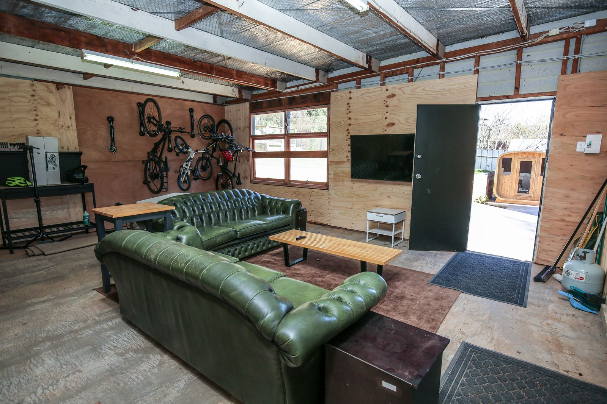

A bike-friendly house in Bright, with a private sauna for afterwards
Bright is on the Murray to Mountains Rail Trail and is home to Mystic Bike Park. Stoke and Steam is a three-bedroom house in Bright set up for people who bring bikes: somewhere locked to hang them, somewhere to wash them, and somewhere to dry the kit overnight.
Where the bikes go
The garage locks separately from the house, on its own lock or code, and there are six wall racks inside it that take mountain bikes and e-bikes, with an e-bike charging point by the racks. Bike locks, tools and local trail maps are in the garage too.

The garage is also the garage lounge, a second living room with a wood fire, so cars stay in the driveway. There is off-street parking for three cars.
Washing and fixing
Outside there is a dedicated bike wash area, so the mud stays out of the house.
- A hose and tap, on hardstand with drainage
- A work stand and a floor pump
- Tools and bike locks in the garage
The drying room
A drying room set-up in the laundry: a 10 L/day desiccant dehumidifier, two drying racks and a boot and glove dryer, so wet gear is dry by morning — riding kit, shoes, snow gear, walking boots or a rainy week's washing. The laundry has a door, so it shuts while the dehumidifier runs, and a desiccant unit keeps drying on cold mountain nights, when a compressor one struggles.
After the ride
The private outdoor electric sauna seats six and is ready in about 30 minutes, with a hot and cold outdoor shower next to it to rinse off under. After that there are two enclosed wood fires, a fire pit, and a covered alfresco area with a gas BBQ and an outdoor table for eight.
The house
- Sleeps six: two king bedrooms and a room with two single beds, with two bathrooms
- 12 minutes' walk to the edge of town and the nearest cafés (about 19 to the town centre), 5 to the river
- myenergi EV charger (22 kW three-phase, tethered Type 2 cable) in the front driveway, free for staying guests
- Two dogs welcome, per AVG's pet policy
- A few bikes for general use